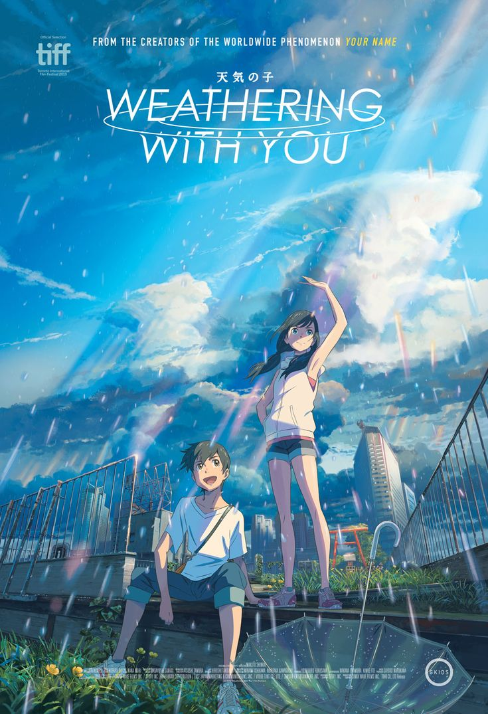
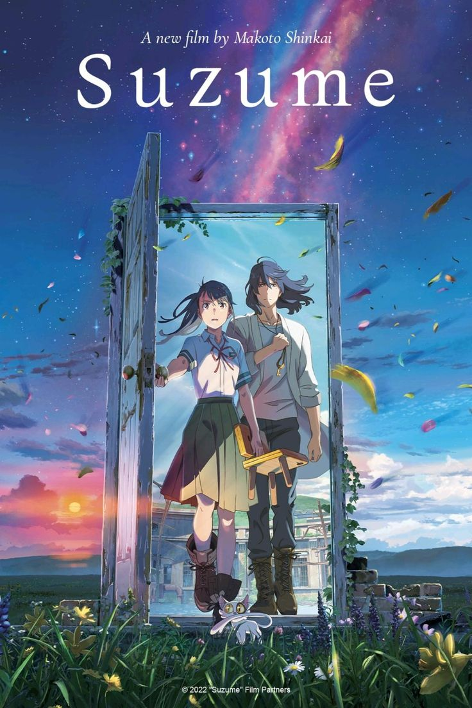
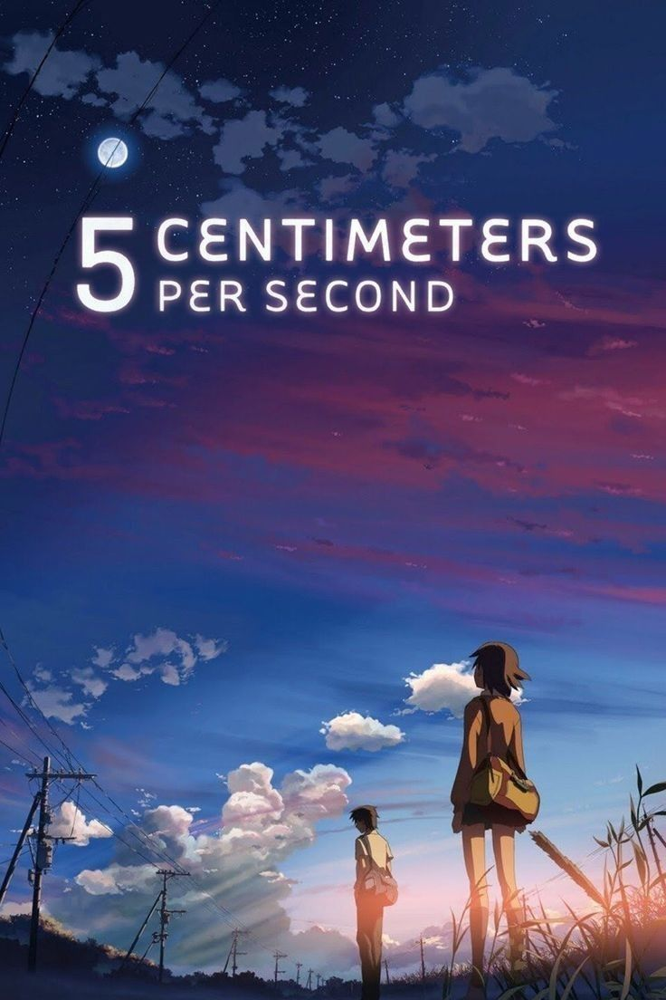
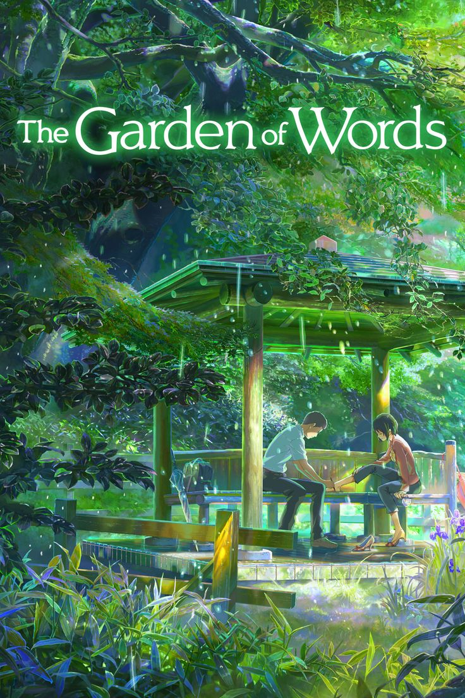
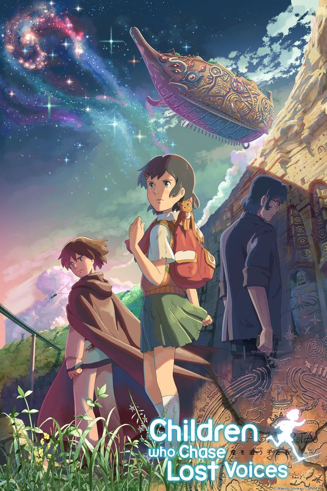

01
01
Your Name.
Dua remaja terhubung melalui mimpi dan pertukaran tubuh dalam kisah tentang takdir dan waktu.
AN ANIMATED WORLD BY
ANIMATION FILM DIRECTOR
Creating worlds beyond imagination through breathtaking visuals, beautiful landscapes, and unforgettable stories.
EXPLORE MY WORKSTHE ART OF STORYTELLING
“Every frame can hold a feeling, and every story can become a memory.”
SELECTED FILMOGRAPHY
01
Dua remaja terhubung melalui mimpi dan pertukaran tubuh dalam kisah tentang takdir dan waktu.

02Di tengah hujan Tokyo, seorang pemuda bertemu gadis yang dipercaya mampu menghadirkan cuaca cerah.

03Perjalanan melintasi Jepang untuk menutup pintu-pintu misterius yang membawa bencana.

04Kisah tentang jarak, kenangan, dan hubungan yang berubah perlahan seiring berjalannya waktu.

05Pertemuan dua orang asing di sebuah taman saat hujan, yang perlahan menjadi ruang untuk saling memahami.

06Petualangan menuju dunia tersembunyi yang mengeksplorasi kehilangan dan keberanian untuk melangkah.
ABOUT THE DIRECTOR
Makoto Shinkai adalah sutradara, penulis, dan animator asal Jepang yang lahir pada 1973 di Prefektur Nagano.
Ia memulai debut film panjangnya melalui The Place Promised in Our Early Days (2004), setelah dikenal lewat film pendek Voices of a Distant Star (2002). Karya-karyanya dikenal melalui visual yang detail dan cerita yang dekat dengan emosi manusia.
Langit, hujan, cahaya, lanskap kota, jarak, waktu, dan kenangan menjadi elemen penting dalam dunia sinematiknya.
FROM THE BEGINNING
Beberapa tonggak perjalanan Makoto Shinkai dalam dunia animasi dan perfilman.
Lahir di Prefektur Nagano, Jepang.
Merilis film pendek yang ia kerjakan secara independen.
Merilis film panjang pertamanya.
Menghadirkan kisah episodik tentang jarak dan perubahan hubungan.
Memperkuat ciri visualnya melalui detail hujan dan suasana kota.
Merilis Your Name., Weathering With You, dan Suzume untuk penonton dunia.
VISUAL LANGUAGE
Karya Makoto Shinkai memiliki pendekatan visual dan tema yang khas. Grafik berikut merupakan interpretasi editorial, bukan penilaian resmi.
GET IN TOUCH
Punya pertanyaan atau ingin berbagi cerita tentang karya Makoto Shinkai? Kirim pesan melalui formulir di bawah ini.
CONTACT INFORMATION
Website ini dibuat sebagai portfolio fan-made untuk tujuan edukasi dan apresiasi terhadap karya Makoto Shinkai.
Isi detail di bawah ini untuk menyiapkan pesan. Semua kolom bertanda * wajib diisi.